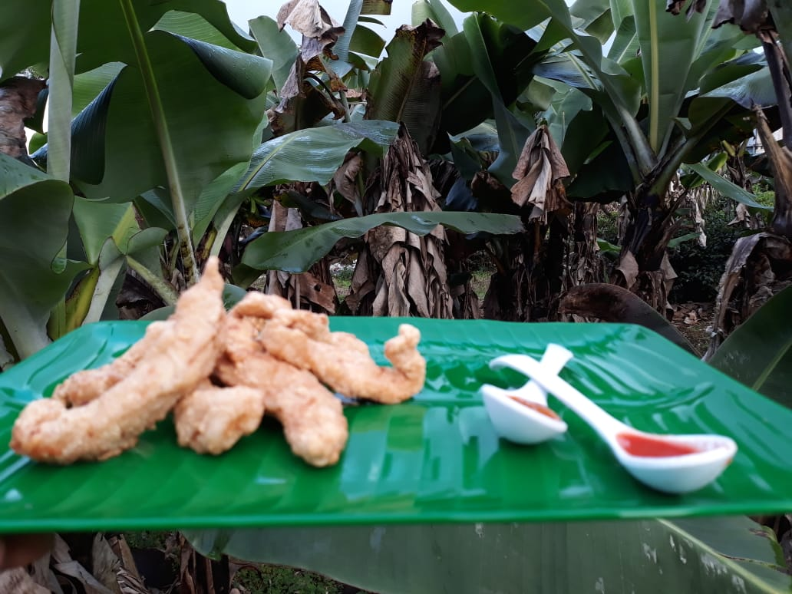

About Me

Hi! My name is Sweta.
I am a lab tech but my real super power lies in my passion for cooking. Stay tune for more veggie and non-veggie meals from me.
No one is born as a great cook, one learns by doing"